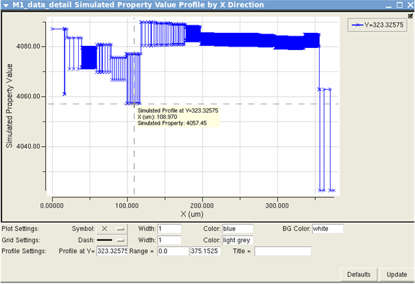

You can create
a profile plot for a property based on simulated data only, using
an x‑ or y‑directional scan over the colormap tiles to plot heights.
Figure 1 shows an example.
Figure 1. Simulated Profile Plot by X Direction
Prerequisites
You have followed the steps described in “CMP Analysis”, and you have a DFM database containing the analysis results.
Calibre RVE for DFM is running and the CMP analysis
results are displayed in the CMP tab.
Procedure
- Right-click on the M1 row and choose Colormap > Thickness
Topology.
This creates a thickness
topology colormap for layer M1 inside Calibre RVE for DFM.
- Right‑click a tile of interest in the colormap
to display menu items for property and plot information.
- Choose Show Profile
> Simulation By X Direction.
This creates a profile
plot of the x‑axis cut‑line over the selected colormap tile.
- Right‑click the lower-left corner of the profile
plot window to show the plot settings.
- Choose Show Grid Settings and
change the default grid color to “light grey” in the Color field.
You can also change the default plot colors, symbols, background,
and profile range settings.
- Click Update to
display the profile plot with your updated settings.
Results
You have created a thickness topology profile
plot using only simulation data. This type of plot can be used for
a comparing simulated versus measured atomic force microscopy (AFM) line‑scan
data.